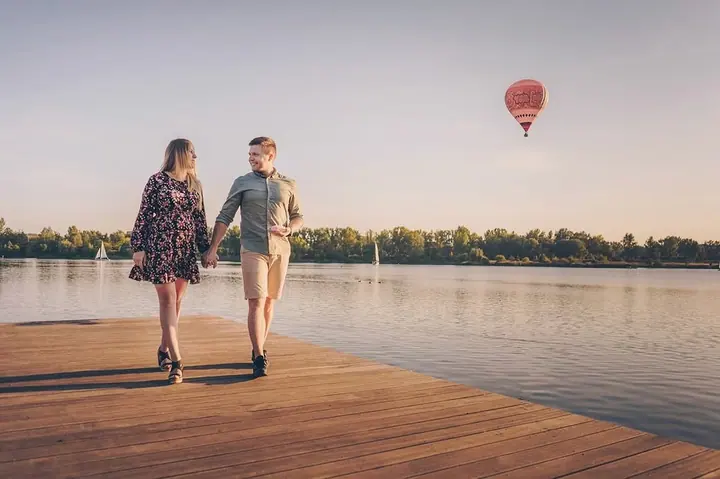
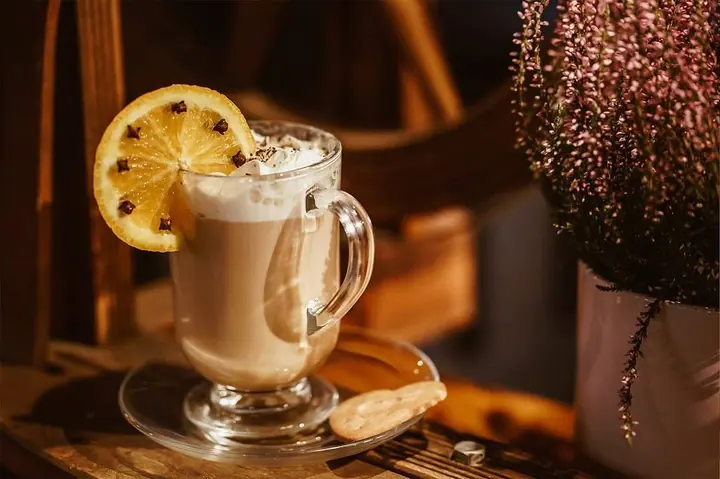
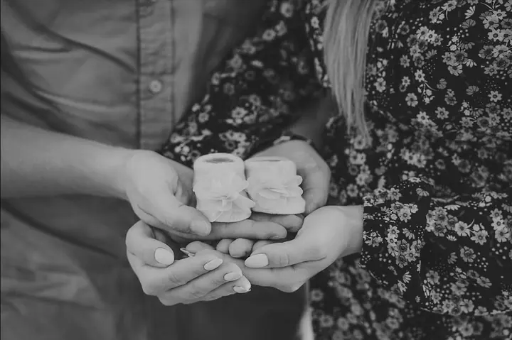
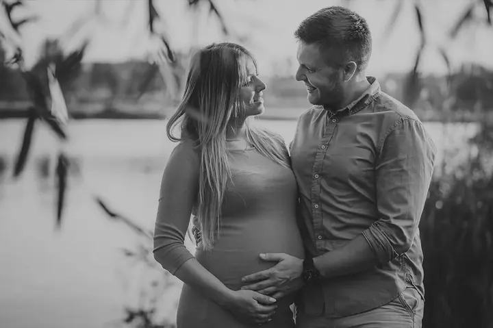
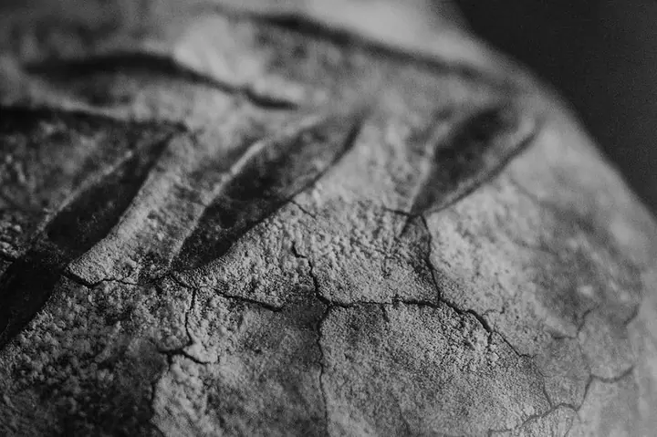
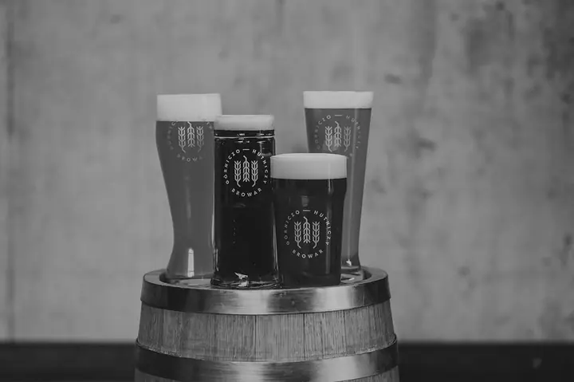
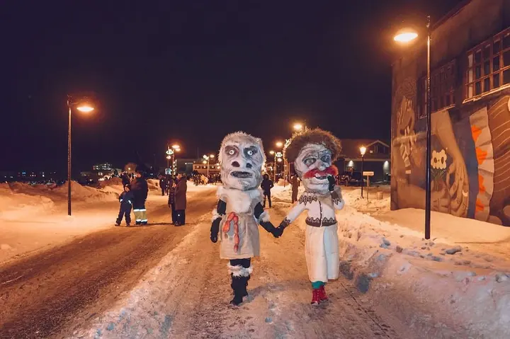
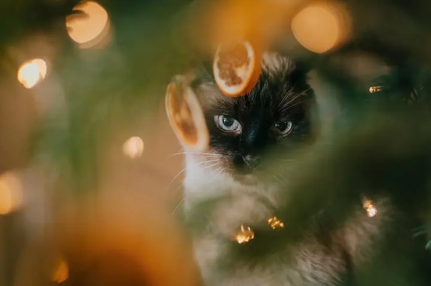
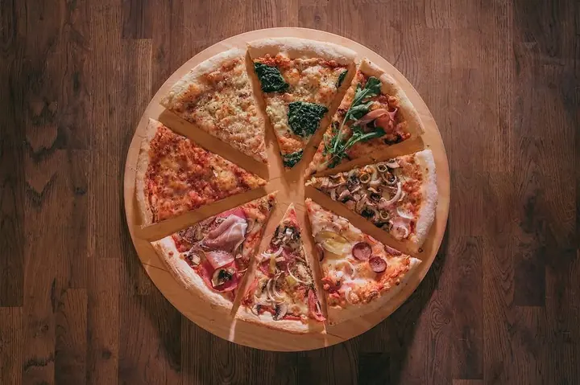

01 / 04
Akce a reportáže
Fotím festivaly, městské oslavy, sportovní závody, koncerty i večery plné emocí. Reportáž z vaší akce ukáže atmosféru i lidi, kteří ji tvoří.
Zeptat se na termín→








Rodinné chvíle i velké události
Zeptat se na termín →(01) Ahoj
Jmenuji se Sabina Szkarłat a fotím rodiny , městské slavnosti a akce i jídlo a produkty . Kromě focení se věnuji grafickému designu, motion designu a ilustraci.
581lidí sleduje mou práci na Instagramu
(02) Co fotím
01 / 04
Fotím festivaly, městské oslavy, sportovní závody, koncerty i večery plné emocí. Reportáž z vaší akce ukáže atmosféru i lidi, kteří ji tvoří.
Zeptat se na termín→02 / 04
Klidné rodinné focení venku, kde je čas na blízkost a obyčejná gesta. Ráda fotím i páry, které čekají miminko.
Zeptat se na termín→03 / 04
Produktové fotky, jídlo a pití pro restaurace, pivovary a značky. Ráda dělám i branding focení pro kapely a firmy.
Zeptat se na termín→Dále nabízím
Fotím svatební den i samostatné svatební focení páru. Soustředím se na emoce a chvíle, které jsou jen vaše.
↗(04) Postup
Od první zprávy po hotovou galerii.
Krok 1 z 4
Napište, co chcete fotit, kdy a kde. Ať jde o rodinu, svatbu, nebo akci, ráda se doptám na podrobnosti.
Krok 2 z 4
Domluvíme místo, čas a to, na čem vám nejvíc záleží. U akcí si projdeme program a klíčové momenty.
Krok 3 z 4
Fotím v klidu a nenápadně, aby se všichni cítili přirozeně. Sleduji emoce a atmosféru, ne jen pózy.
Krok 4 z 4
Fotky pečlivě vyberu a upravím do jednotného stylu. Hotovou galerii vám pošlu online.
Vaše důležité chvíle a emoce
(05) Za objektivem
Jmenuji se Sabina a fotím vaše důležité chvíle a emoce. Ať jde o rodinné focení u vody, svatbu, nebo velkou oslavu celého města, zajímají mě lidé a atmosféra kolem nich.
Fotila jsem na Islandu Reykjavík Pride, islandský národní den, 30. výročí Reykjanesbæru i dětský a mládežnický festival BAUN. V Polsku a jinde jsem fotila třeba Red Bull Megawatt, mistrovství světa FIM SuperEnduro, tým AGH Racing na okruhu v Barceloně nebo reportáž z benediktinského opatství v Tyniecu.
Vedle fotografie se věnuji grafice, motion designu a ilustraci. Díky tomu dokážu značkám a kapelám připravit branding focení, které ladí s jejich vizuálem.
Sabina
Sabina Szkarłat · Rodinná a eventová fotografka
Ano. Fotila jsem festivaly, městské oslavy, sportovní závody, koncerty i firemní akce. Ráda nafotím i firemní portréty a branding.
Moje portfolio vzniklo hlavně na Islandu a v Polsku. Pokud fotíte jinde, napište mi a domluvíme se.
Většinou venku, v klidu a bez spěchu. Fotím i páry, které čekají miminko.
Termín předání se odvíjí od rozsahu focení. Konkrétně ho vždy domluvíme předem.
(07) Kontakt
Napište pár vět o tom, co si představujete, a termín, který se vám hodí.
sabina.szkarlat@gmail.com